|
|
|
Российскому го – 60 лет!Фестиваль «Игра Го в России - 60 лет!»Под таким девизом в Санкт-Петербурге прошёл юбилейный фестиваль в отеле «Московские ворота» 19-21 декабря 2025 года, на который были приглашены ветераны всей России. К сожалению, не все из них смогли добраться на фестиваль, хотя все расходы были оплачены.
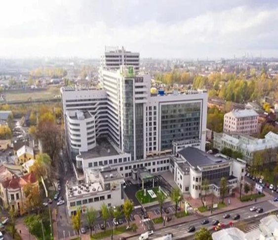 Отель «Московские Ворота». На открытии фестиваля прозвучало приветственное слово Президента РФГ Максима Волкова. Игровая программа длилась три дня. Играли ветераны, затем был общий турнир и, наконец, детский. Выставку представляли экспозиции М. Подоляка и В. Трубицына. Специальный доклад сделал А. Динерштейн об истории игровых досок. Фестиваль завершился товарищеским ужином в китайском ресторане.
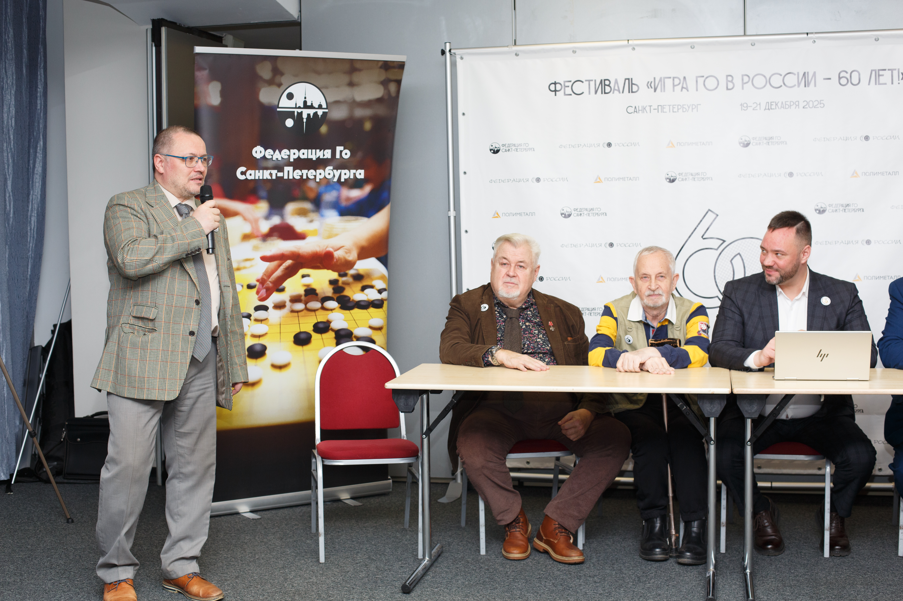 Руководитель Федерации го Санкт-Петербурга Максим Подоляк открывает турнир ветеранов.
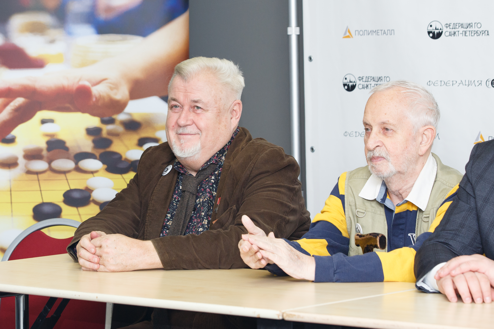 Президент РФГ Максим Волков (слева).
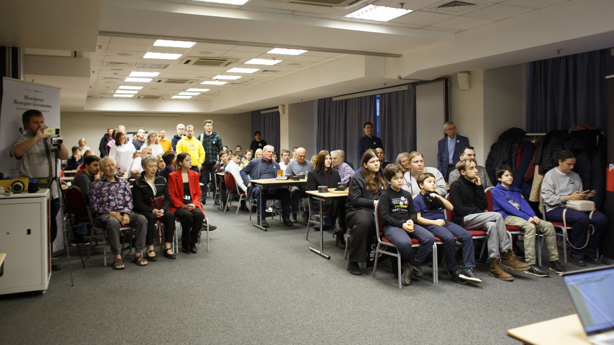 Участники фестиваля. Фотоальбом с фестиваля можно посмотреть по ссылке. Турнир ветерановЦентральное место на фестивале занимал турнир ветеранов.
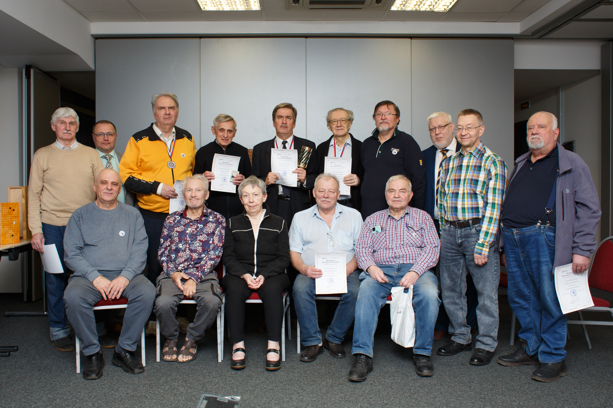
Стоят (слева направо): Аркадий Ясырев (Санкт-Петербург), Максим Подоляк (Санкт-Петербург), Юрий Соловьёв (Нижний Новгород), Андрей Хитров (Иваново),
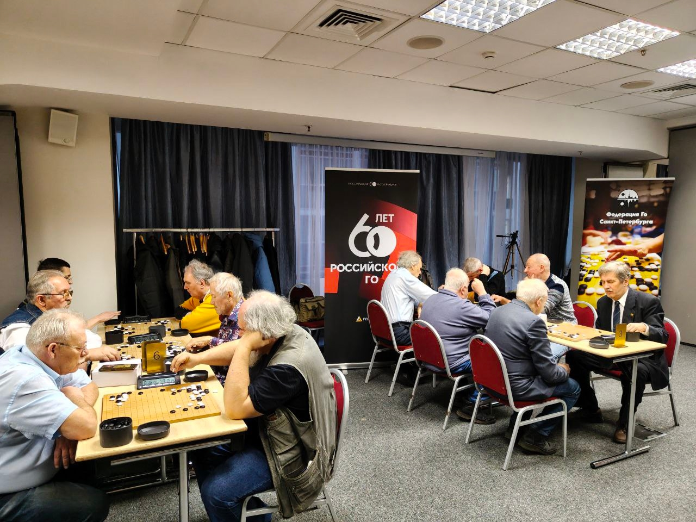
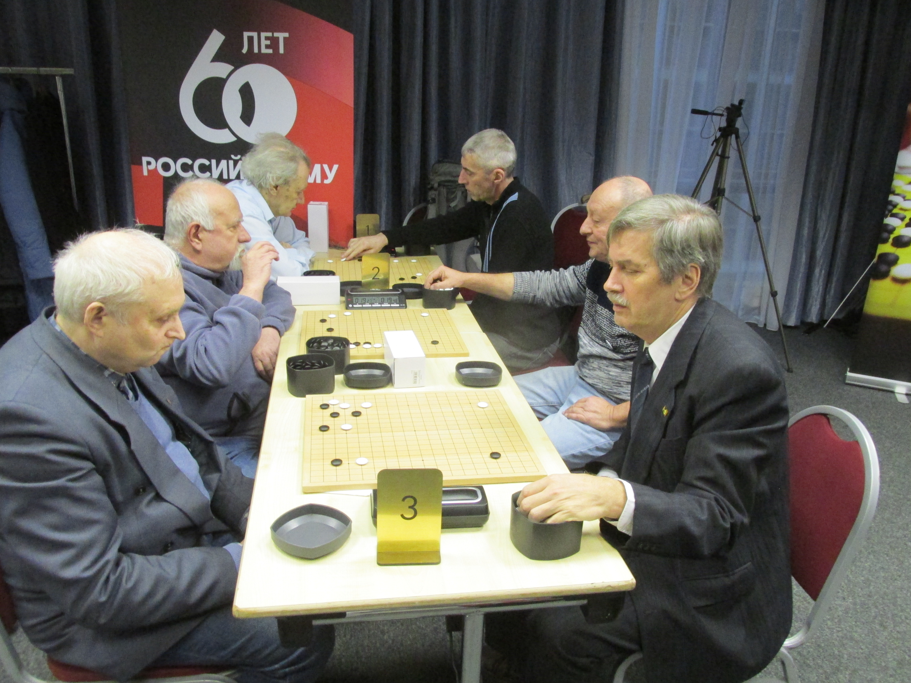 Идёт турнир! Полные результаты турнира ветеранов можно посмотреть на сайте РФГ по ссылке. Трубицын В.А.
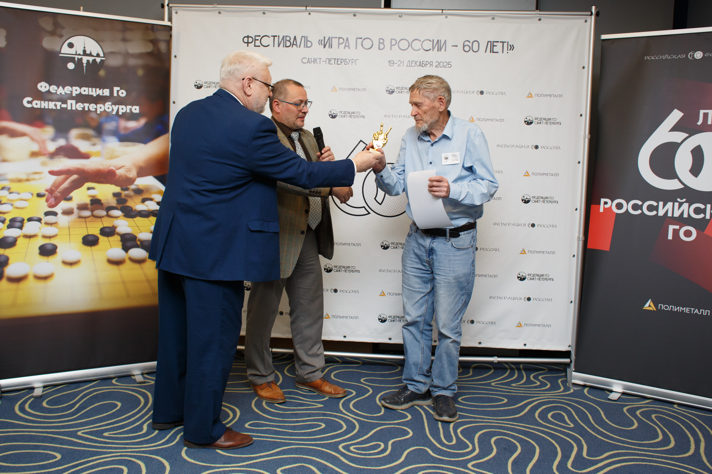 В.А. Трубицын получает памятный приз от В.И. Горжалцана, секретаря РФГ.
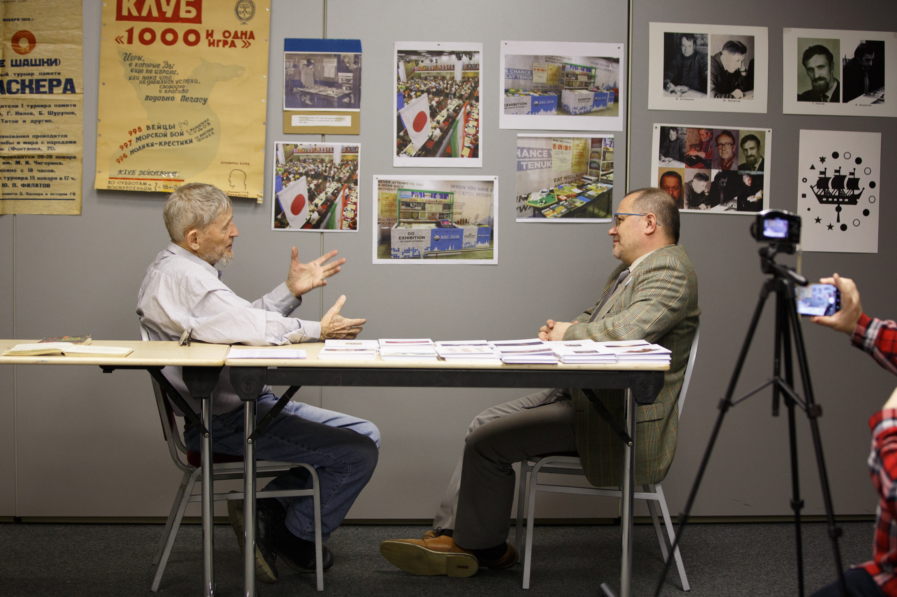
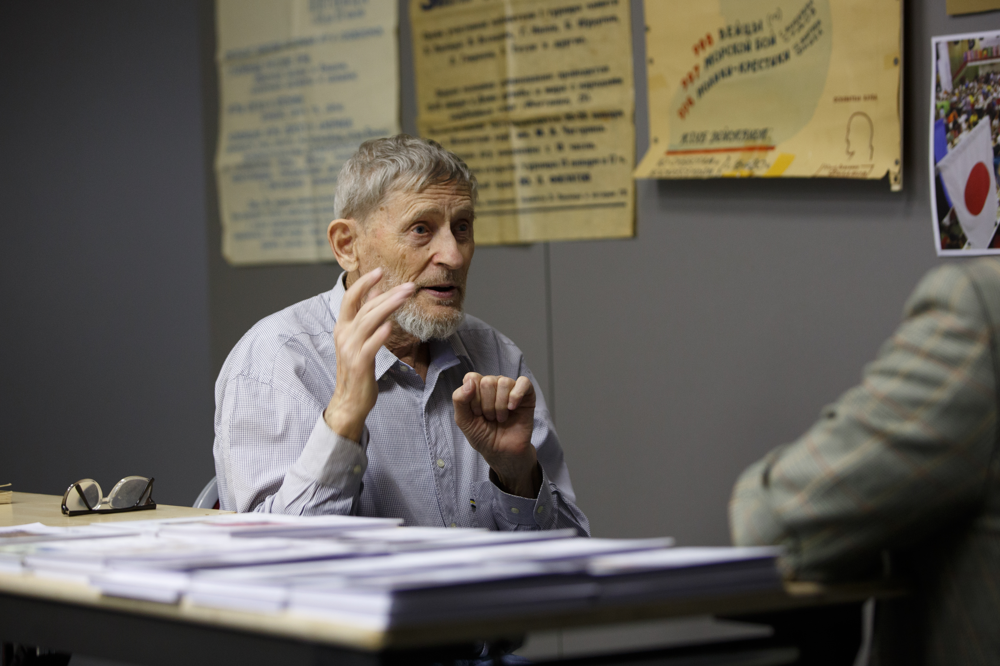 М.А. Подоляк берёт интервью у В.А. Трубицына. Особо следует отметить, что В.А. Трубицын по указанию Г. Нилова впервые сделал крупную выставку «50 лет Российскому го» ещё 10 лет назад на EGC-2016 в отеле «Азимут». (Репортаж В. Медведева, московского игрока, будет помещён в этом же разделе сайта позднее). Экспозиции
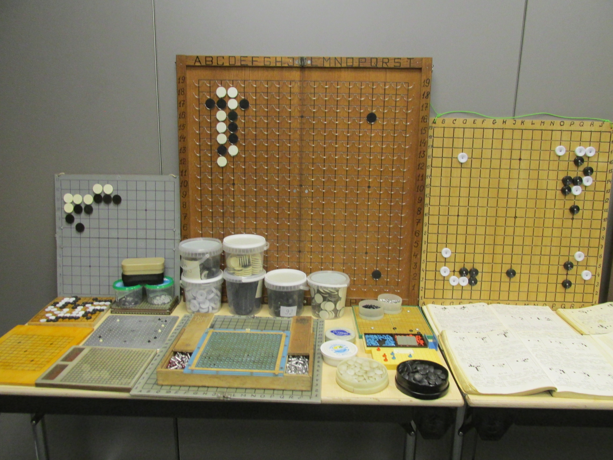
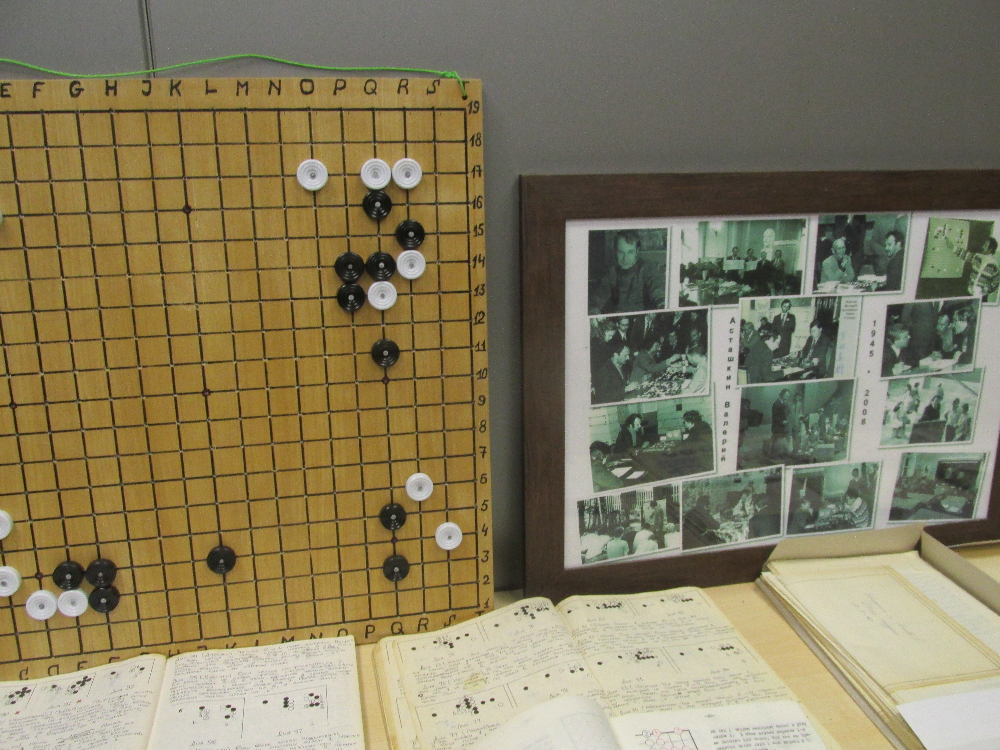 Первые демонстрационные доски.
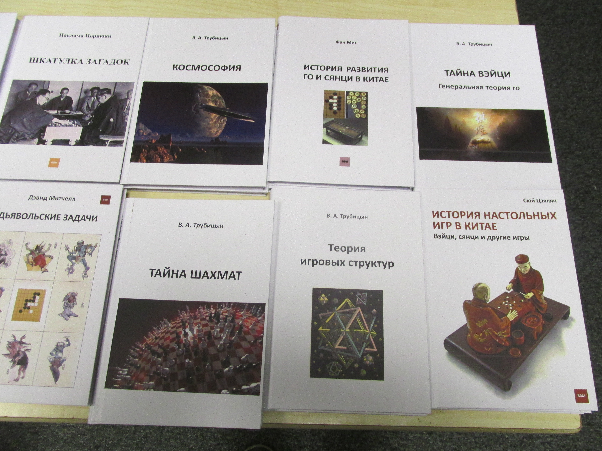 Издания В. Нестерова.
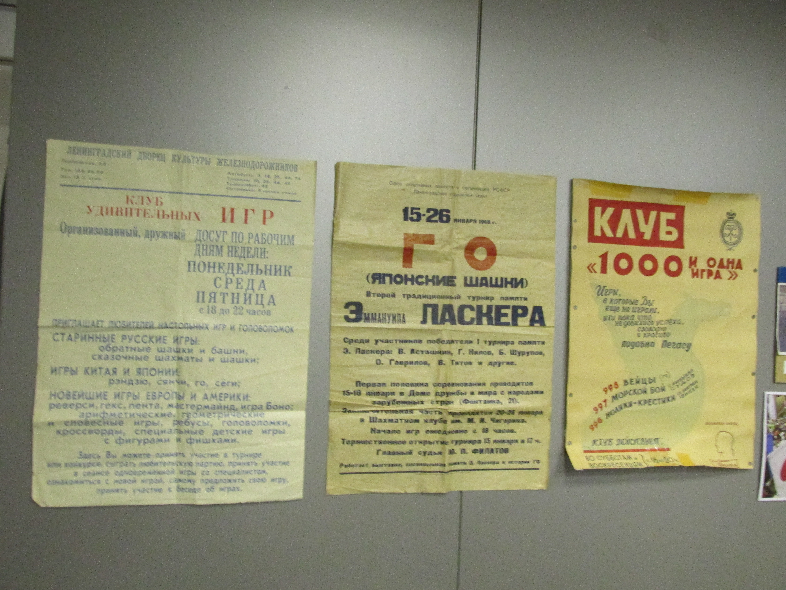 Первые плакаты Ю.П. Филатова. Общие впечатленияНу что сказать об общих впечатлениях? Они великолепны! В фантастическую игру играют фантастические люди. И как приятно, что одна из двух великих восточных игр благодаря нашим усилиям заняла достойное место на просторах России. Наши спортсмены успешно выступают на европейском уровне, а наша Ассоциация Фишка.ру давно вывела го во внеструктурное пространство — то есть в космос! Что и отражено в большой серии книг члена нашей организации Владимира Нестерова, доступных по ссылке ИГРА УМА. Кроме того, нами была создана Общая теория го — а также игра в го втроём (Гексо-го). ЗА УСПЕХ НАШЕГО БЕЗНАДЁЖНОГО ДЕЛА!
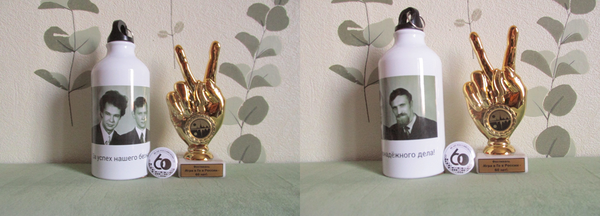 ЗА УСПЕХ НАШЕГО БЕЗНАДЁЖНОГО ДЕЛА! – это любимый лозунг Валерия Асташкина. Который прозвучал и на памятных призах. На туристской фляжке изображен широко известный снимок Асташкина, Василова и Нилова с указанным лозунгом. И это хорошо. Но я считаю, что на нашем юбилее была недостаточно отмечена роль Ю.П. Филатова. Ведь Асташкин и Нилов были всего лишь его учениками. А мамаша го Марта всегда считала, что у колыбели Российского го раньше всех склонила свои кудрявые головы четвёрка игроков в составе Филатова, Асташкина, Нилова и Шурупова. (Причём Филатова и Нилова я знал очень хорошо, сотрудничая с ними многие годы. Давно пора поместить большую статью на нашем сайте и об Асташкине). Валерий Трубицын 1 января 2026 года |
|
|
|